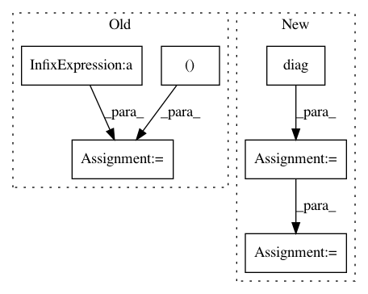

8111b1a80dde0202f9ae96f7598441218066e2db,innvestigate/tools/pattern.py,LinearPattern,compute_pattern,#LinearPattern#,118
Before Change
cov_xy = mean_xy - ExEy
sq_sigma_y = mean_yy - EyEy
else:
numerator = mean_xy - mean_x * mean_y
denumerator = np.dot(W2D.T, numerator)
denumerator = np.diag(denumerator)
A = safe_divide(numerator, denumerator[:, None])
// update length
//norm = np.diag(np.dot(W2D.T, A))[np.newaxis]
//A = safe_divide(A, norm)
After Change
EyEy = mean_y * mean_y
cov_xy = mean_xy - ExEy
w_cov_xy = np.diag(np.dot(W2D.T, cov_xy))
A = safe_divide(cov_xy, w_cov_xy)
// update length
if True:
norm = np.diag(np.dot(W2D.T, A))
A = safe_divide(A, norm)
// check pattern
if False:
tmp = np.diag(np.dot(W2D.T, A))
In pattern: SUPERPATTERN
Frequency: 4
Non-data size: 6
Instances
Project Name: albermax/innvestigate
Commit Name: 8111b1a80dde0202f9ae96f7598441218066e2db
Time: 2018-02-20
Author: alber.maximilian@gmail.com
File Name: innvestigate/tools/pattern.py
Class Name: LinearPattern
Method Name: compute_pattern
Project Name: pymc-devs/pymc3
Commit Name: 7a31475bb139893cd3fd2bd1dbc33d040a0511c8
Time: 2017-05-04
Author: aseyboldt@users.noreply.github.com
File Name: pymc3/distributions/multivariate.py
Class Name: MvNormal
Method Name: _logp_tau
Project Name: cornellius-gp/gpytorch
Commit Name: 979b8c9efa551e8c948a4aca145367a2d87ac8d6
Time: 2019-02-26
Author: balandat@fb.com
File Name: test/distributions/test_multitask_multivariate_normal.py
Class Name: TestMultiTaskMultivariateNormal
Method Name: test_multivariate_normal_correlated_sampels
Project Name: theislab/scanpy
Commit Name: 9e89e0a6576c8ae04ce97c296fe8fd9dc5ee419f
Time: 2017-02-13
Author: f.alex.wolf@gmx.de
File Name: scanpy/graph.py
Class Name: DataGraph
Method Name: compute_C_matrix